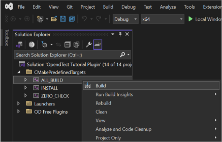
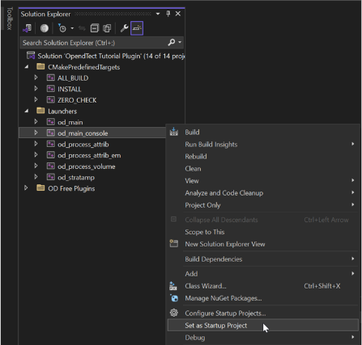
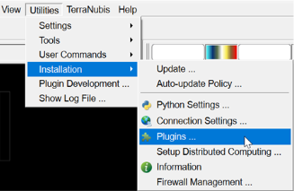
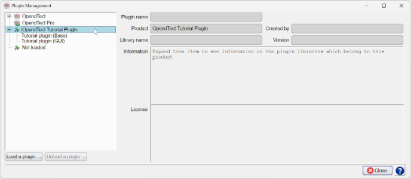
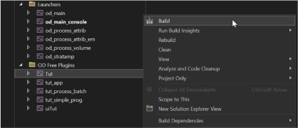
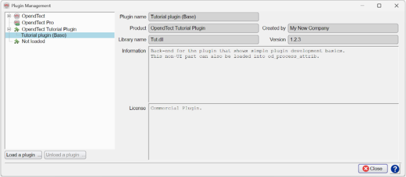

Open the plugin solution in Microsoft Visual Studio and navigate to the Solution Explorer. Expand the “CMakePredefinedTargets", then right-click on "ALL_BUILD" and select Build.

Once the build process is complete, expand the “Launchers” on Solution Explorer. Right-click on "od_main_console" and click "Set as Startup Project". This will be the launcher project for running the od_main debug executable included in the Developer’s Package.

Press F5 to start debugging. If you see any Visual Studio warnings, they can be ignored. The OpendTect main program will launch. Inside OpendTect, navigate to Utilities > Installation > Plugins to verify that the developed plugins are listed and loaded correctly.


Note that the OpendTect program that opens is from the official OpendTect installation. However, the main focus of debugging is the developed plugin. If you want to debug a specific plugin, you must select and build that plugin instead of building “ALL_BUILD”. To do this, go to the Microsoft Visual Studio Solution Explorer and expand “OD Free Plugins”. Select the plugin you want to debug, such as the "Tut" plugin, then right-click on it and click Build.

After the build process is complete, press F5 to start debugging. Once OpendTect launches, check whether the plugin loads correctly by navigating to Utilities > Installation > Plugins.
